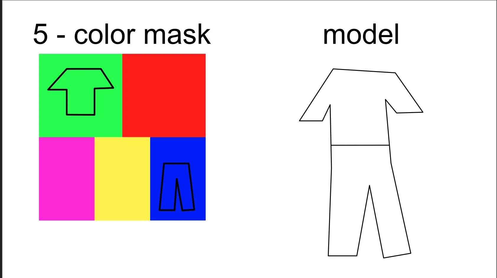
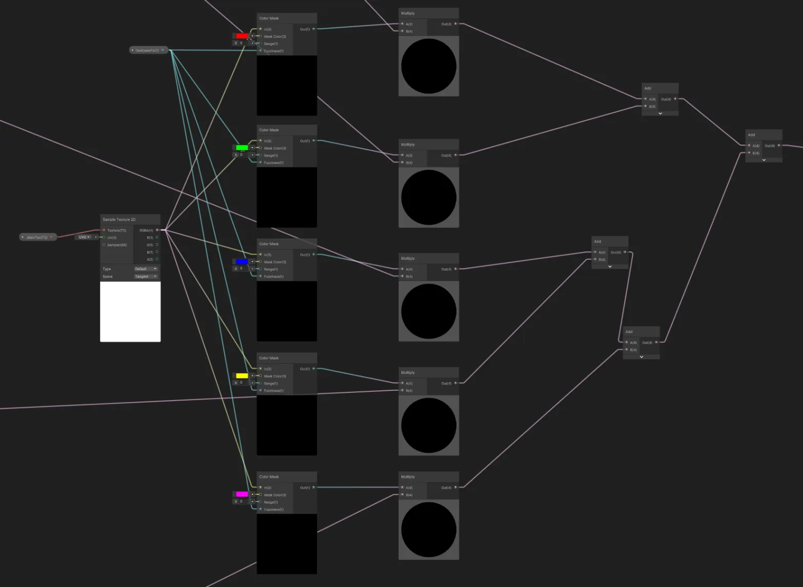
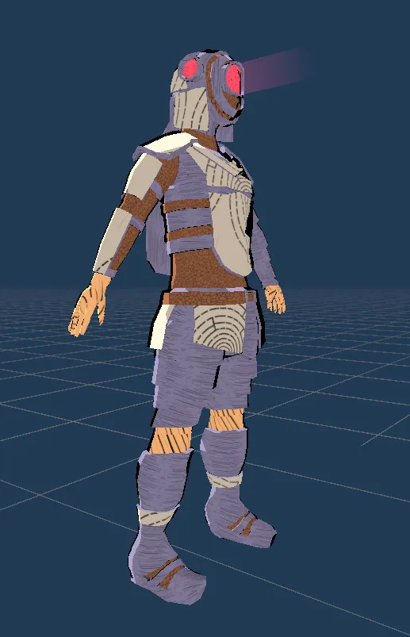
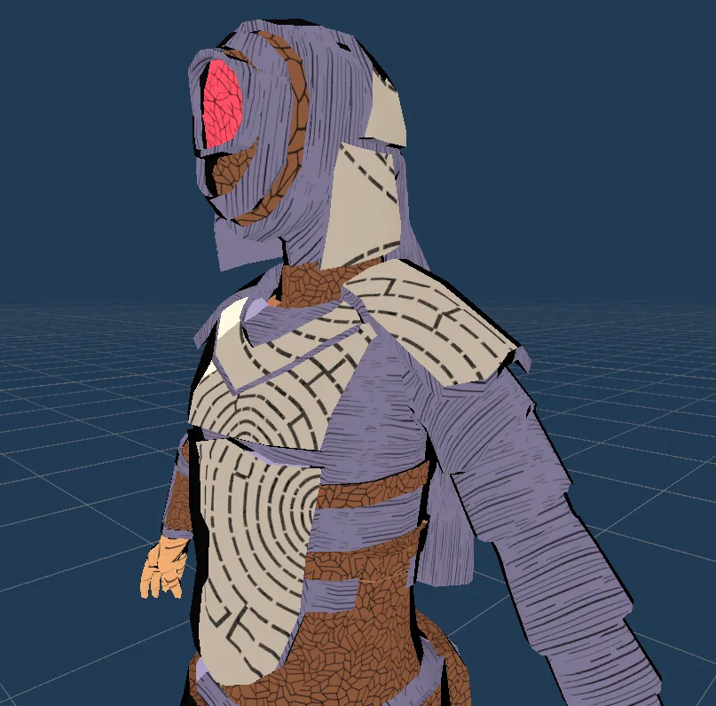

Říkal jsem, že vás budu držet v obraze!
Ahoj. Když už je web funkční a připojený na vlastní doménu, cítím povinnost aktualizovat častěji. Navíc jsem měl produktivní víkend. Kromě game devu jsem vytvořil i Discord bota, který má držet lidi z komunity v obraze. Kdykoliv přidám nový blog post, pošle zprávu na server, takže si můžeš nastavit notifikace na kanál „Blog“ a dostaneš novinku hned.
Zpět ke gamedevu
Minule jsem psal, že jsem vytvořil chytrý systém UV wrappingu. No… tak úplně ne. Musel jsem to celé předělat znovu. Naštěstí už to není takový problém. Ukázalo se, že mi nestačí klasická RGB maska. Potřebuju vlastní počet maskovaných barev, a právě to jsem během víkendu dodělal. Bohužel to zároveň znamená znovu předělat UVčka postav.
To ale nebyl jediný problém. Došlo mi, že i když jsem už výrazně zmenšil množství potřebných textur, dá se to ještě zjednodušit. Reálně bych mohl skončit téměř u jedné textury pro většinu objektů ve hře. Možná ne pro lightmapy, ale to je problém budoucího já.
Na prvním obrázku je základní skica plánu. Textura je rozdělená do pěti barevných zón a jakýkoliv model může být rozbalen do konkrétní barevné oblasti. Shader v Unity pak maskuje výsledné barvy přes materiálový setup. Problém může být u lightmap, pokud se UV stejného modelu překrývají. Harry mi poradil, že buď můžu jednotlivé wrapy poskládat vedle sebe, nebo mít separátní UV pro lightmapy. Zatím to chci řešit spíš první cestou.

Tady je vidět upravené barevné maskování.

Nová zbroj
Kromě toho jsem pracoval i na nové plátové zbroji pro impérium. Má jít o základní armor s menšími technickými vylepšeními, třeba filtrováním vzduchu, světlem v helmě nebo ochranou očí. Nic přehnaného, ale ve světě hry to dává smysl. Každý imperiál by měl takovou výbavu dostat od Impéria. Později ji chci kombinovat s batohy, plášti a třeba halapartnami jako dvouruční zbraní.
Samozřejmě jsem pak zjistil, že musím zase předělávat UVčka, protože nápad se zjednodušenou texturou přišel až poté, co byla zbroj skoro hotová. Ale i tak ji sem házím, ať si uděláš obrázek.


Sleduj moje sítě, pokud chceš další informace o vývoji hry.